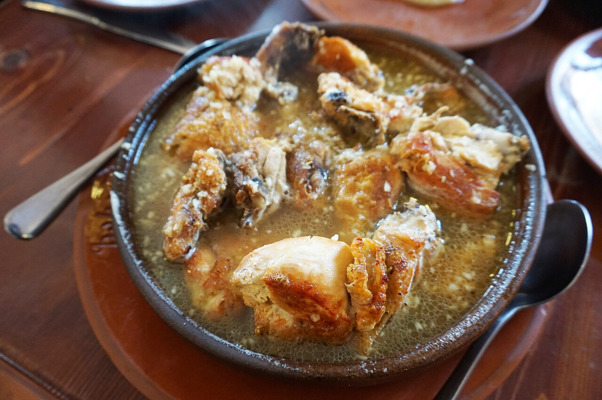
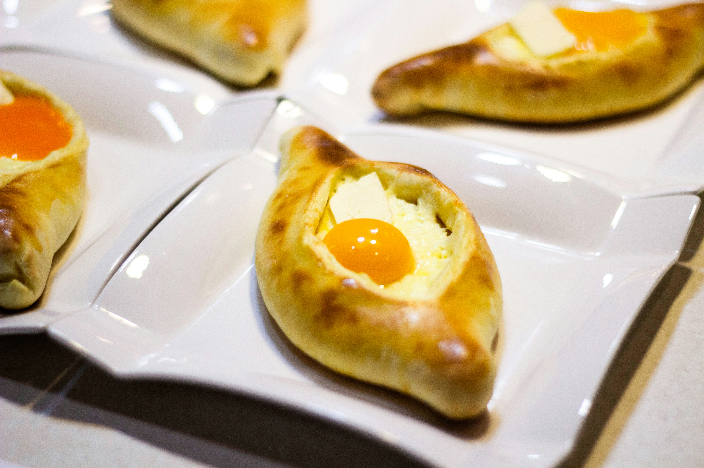

Georgia
 KA
KA EN
EN FR
FR DE
DE ES
KA EN FR DE ES
ES
KA EN FR DE ESევროპისა და აზიის გასაყარზე მდებარე უძველესი კულტურა და დამოუკიდებელი ერი.
ქართული ენა და 3 უნიკალური დამწერლობა, რომელიც UNESCO-ს არამატერიალური კულტურული მემკვიდრეობის ნუსხაშია.
IV-V საუკუნე
უძველესი ფორმა, რომელიც გამოიყენებოდა ქვაზე წარწერებისა და საეკლესიო წიგნებისთვის.
IX საუკუნე
კუთხოვანი და სწრაფი წერის სტილი, რომელმაც შეცვალა ასომთავრული.
XI საუკუნიდან დღემდე
თანამედროვე ქართული ანბანი, რომელსაც დღეს ვიყენებთ.

მსოფლიო ლიტერატურის შედევრი მეგობრობასა და სიყვარულზე.

უძველესი შემორჩენილი ქართული პროზაული ნაწარმოები.
სახელმწიფო რელიგია
საქართველო ერთ-ერთი პირველი ქვეყანაა მსოფლიოში, რომელმაც 326 წელს ქრისტიანობა სახელმწიფო რელიგიად გამოაცხადა.
ავტოკეფალია
ქართულმა ეკლესიამ მოიპოვა სრული დამოუკიდებლობა (ავტოკეფალია), რაც მისი ეროვნული იდენტობის საფუძველი გახდა.
1811 წელს რუსეთის იმპერიამ უკანონოდ გააუქმა საქართველოს ეკლესიის ავტოკეფალია და ქართული ფრესკები გადაღება. ხოლო საბჭოთა/კომუნისტური რეჟიმის დროს (XX საუკუნე) მასობრივად ინგრეოდა ტაძრები, იდევნებოდნენ და ხვრეტდნენ სასულიერო პირებს. „ერთმორწმუნეობის“ ლოზუნგის მიუხედავად, რუსეთმა უდიდესი დარტყმა მიაყენა ქართულ სასულიერო და კულტურულ მემკვიდრეობას.
კოლხეთი და იბერია
ლეგენდარული ოქროს საწმისის სამშობლო. საქართველო ანტიკური ხანიდანვე იყო დასავლური და აღმოსავლური კულტურების შეხვედრის ადგილი.
XII-XIII საუკუნე
დავით აღმაშენებლისა და თამარ მეფის ეპოქა, როდესაც საქართველო რეგიონის უძლიერესი და ყველაზე განათლებული სახელმწიფო იყო.
საქართველომ 1918 წელს შექმნა დემოკრატიული რესპუბლიკა ევროპული ღირებულებებით, თუმცა 1921 წელს საბჭოთა რუსეთმა მოახდინა მისი ანექსია.
1991 წელს დამოუკიდებლობის აღდგენის შემდეგ, რუსეთი აგრძელებს აგრესიას. 2008 წლის ომის შემდეგ, საქართველოს ტერიტორიების 20% (აფხაზეთი და ცხინვალის რეგიონი) დღემდე ოკუპირებულია რუსეთის ფედერაციის მიერ.
საქართველო შედგება 18 ისტორიულ-გეოგრაფიული კუთხისგან. თითოეულს აქვს თავისი უნიკალური დიალექტი და კულინარია, ხოლო სამეგრელოსა და სვანეთს — თავისი უძველესი ენებიც. სამწუხაროდ, 18 კუთხიდან 2 (აფხაზეთი და სამაჩაბლო/ცხინვალის რეგიონი) დღემდე რუსეთის მიერაა ოკუპირებული.
დიალექტი: რაჭული
 რაჭული ლობიანი
რაჭული ლობიანი
შქმერული (სოფელ შქმერიდან) ქოთნის ლობიო რაჭული ლორით
ქოთნის ლობიო რაჭული ლორითდიალექტი: ლეჩხუმური
 ლეჩხუმური ლობიანი
ლეჩხუმური ლობიანი ლეჩხუმური თაფლი და ჭადი
ლეჩხუმური თაფლი და ჭადი ხვანჭკარის/ოჯალეშის ზონის ღვინოები
ხვანჭკარის/ოჯალეშის ზონის ღვინოებიენა: მეგრული
 ელარჯი
ელარჯი ხარჩო (ნიგვზით)
ხარჩო (ნიგვზით) მეგრული ხაჭაპური
მეგრული ხაჭაპურიენა: სვანური
 კუბდარი
კუბდარი ჭვიშტარი
ჭვიშტარი სვანური მარილი
სვანური მარილიდიალექტი: აჭარული

აჭარული ხაჭაპური იახნი
იახნი სინორი
სინორიდიალექტი: კახური
 მწვადი (ვაზის ლაშზე)
მწვადი (ვაზის ლაშზე) ჩურჩხელა
ჩურჩხელა ხაშლამა
ხაშლამადიალექტი: იმერული
 იმერული ხაჭაპური
იმერული ხაჭაპური ჭყინტი ყველი და ეკალა ფხალი
ჭყინტი ყველი და ეკალა ფხალი ქათამი ნიორწყალში / ბაჟეში
ქათამი ნიორწყალში / ბაჟეშიდიალექტი: გურული
 გურული ღვეზელი
გურული ღვეზელი ჯანჯუხი და გურული ჯანჯუხა
ჯანჯუხი და გურული ჯანჯუხა ფხალეულობა და მჭადი
ფხალეულობა და მჭადიდიალექტი: ქართლური
 ქართლური შეჭამანდი
ქართლური შეჭამანდი კალმახი / თევზეული
კალმახი / თევზეული ხილის უმდიდრესი ასორტიმენტი
ხილის უმდიდრესი ასორტიმენტიდიალექტი: მესხური / ჯავახური
 აპოხტის ხინკალი
აპოხტის ხინკალი მესხური ქადა და ტენილი ყველი
მესხური ქადა და ტენილი ყველი ლოქო / მესხური ლოქოკინა
ლოქო / მესხური ლოქოკინადიალექტები: თუშური, ხევსურული, ფშაური...
 მთიულური / ფშაური ხინკალი
მთიულური / ფშაური ხინკალი დამბალხაჭო და კოტორი
დამბალხაჭო და კოტორი თუშური გუდის ყველი
თუშური გუდის ყველისტატუსი: დროებით ოკუპირებულია
 აფხაზური აჯიკა
აფხაზური აჯიკა აბყასტა (ღომი) და ყველი
აბყასტა (ღომი) და ყველი აფხაზურა (შემწვარი ხორცი)
აფხაზურა (შემწვარი ხორცი)სტატუსი: დროებით ოკუპირებულია
 ოსური/ქართლური ხაჭაპური (ხაბიზგინა)
ოსური/ქართლური ხაჭაპური (ხაბიზგინა) ხადა / ქართლურ-მთიულური კერძები
ხადა / ქართლურ-მთიულური კერძები ტრადიციული ლუდისა და ხორცის კულტურა
ტრადიციული ლუდისა და ხორცის კულტურასაქართველო ითვლება ღვინის სამშობლოდ. არქეოლოგიურად დადასტურებულია, რომ აქ ღვინოს ქვევრში ჯერ კიდევ 8000 წლის წინ აყენებდნენ (UNESCO-ს ძეგლი).
კომუნისტური რეჟიმის დროს მიზანმიმართულად დაიწყო ქართული ღვინის კულტურის განადგურება. მასობრივი ინდუსტრიალიზაციის სახელით:
დღეს ქართული მეღვინეობა უბრუნდება თავის ფესვებს და აცოცხლებს დაკარგულ უნიკალურ ჯიშებსა და ქვევრის მეთოდს!